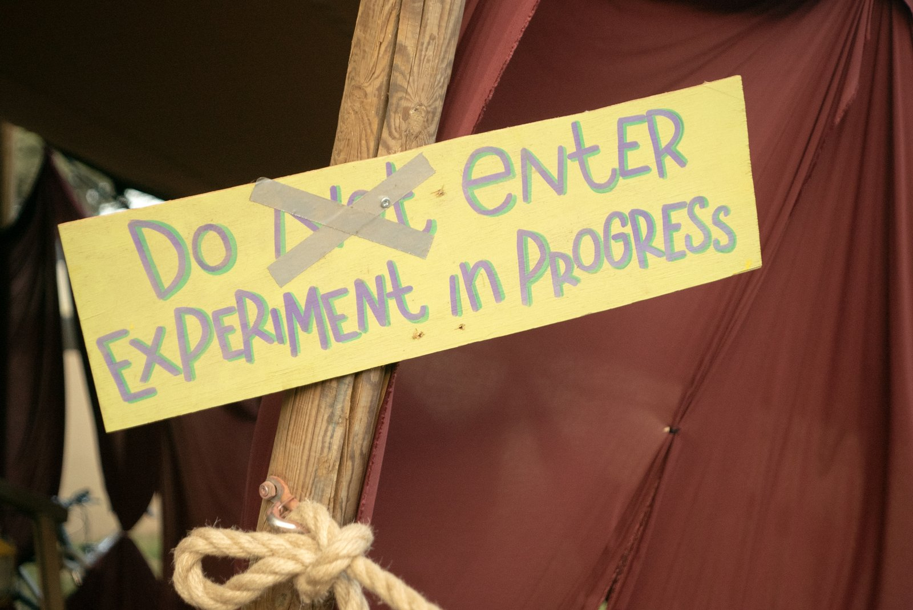

Waking Life is a transformational arts and music festival in the Alentejo region of Portugal. Since 2023, it has been the home of the Latent States Camp — a pioneering experiment in conducting scientific research within what its organizers call an ‘autonomous zone.’
A festival is not a convenient venue. It is a site where the conditions for experience are fundamentally different from the laboratory: voluntary participation, altered states, communal living, music, nature, night. These are not confounds to be controlled for. They are the phenomenon.
The collaboration has been ambitious and evolving. The partnership works best when it stays close to the original vision: not science transplanted to a festival, but a form of inquiry that could only exist there — shaped by the conditions of voluntary participation, communal living, and altered experience that no laboratory can reproduce.